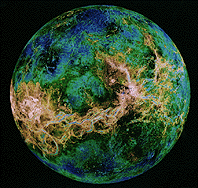
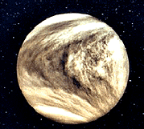

Venus es el segundo planeta del sistema solar en orden de proximidad al Sol y el tercero en cuanto a tamaño en orden ascendente después de Mercurio y Marte. Al igual que Mercurio, carece de satélites naturales. Recibe su nombre en honor a Venus, la diosa romana del amor (gr. Afrodita). Al ser el segundo objeto natural más brillante después de la Luna, puede ser visto en un cielo nocturno despejado a simple vista. Se trata de un planeta interior de tipo rocoso y terrestre, llamado con frecuencia el planeta hermano de la Tierra, ya que ambos son similares en cuanto a tamaño, masa y composición, aunque totalmente diferentes en cuestiones térmicas y atmosféricas (la temperatura media de Venus es de 463,85 ºC). Su órbita es una elipse con una excentricidad de menos del 1%, formando la órbita más circular de todos los planetas; apenas supera la de Neptuno. Su presión atmosférica es 90 veces superior a la terrestre; es, por lo tanto, la mayor presión atmosférica de todos los planetas rocosos del sistema solar. Es de color blanco/amarillento por su atmósfera compuesta mayoritariamente por dióxido de carbono (CO2), ácido sulfhídrico (H2S) y nitrógeno (N2).
Venus y la Tierra tienen un tamaño, una composición y una masa similar. Se diferencian porque Venus no tiene océanos o vida humana y sus temperaturas durante el día llegan a los 484 grados Celsius. Durante el día la temperatura es tan alta que puede fundir plomo. La densa atmósfera está compuesta de dióxido de carbono y ácido sulfúrico lo que provoca un efecto invernadero atrapando el calor. Venus revoluciona alrededor del Sol en una órbita circular cada 225 días terrestres. Venus rota despacio alrededor de su eje en la dirección de las agujas del reloj, lo cual es conocido como rotación "retrógrada" debido a que es la dirección opuesta a la de los otros siete planetas. La rotación de Venus toma 243 días terrestres, por lo tanto los días en Venus son más largos que los años. Como los otros planetas interiores, la superficie de Venus ha sido modelada por formación de cráteres por impacto de meteoritos , actividad tectónica y volcanes, los cuales los científicos cren que todavía estan activos. Se piensa que la actividad volcánica es la fuente de sulfuro encontrado en la atmósfera. Venus no tiene satélites naturales.
|  |  |
|---|